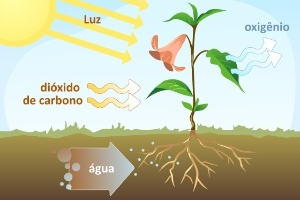
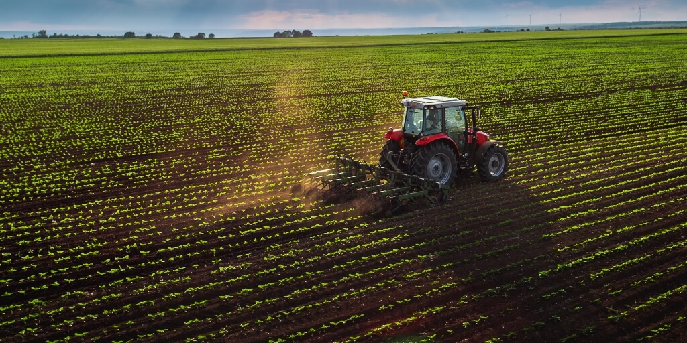

As plantas são seres vivos que desempenham um papel essencial
e indispensável para a sustentação da vida em nosso planeta. Elas são muito mais do que apenas elementos paisagísticos ou ornamentais que enfeitam nossos ambientes naturais. Na verdade, as plantas são a base de toda a vida, desde os microorganismos até os seres humanos, e desempenham um papel vital em diversas áreas que afetam diretamente nossa existência.
Uma das principais contribuições das plantas é a produção de oxigênio por meio do processo de fotossíntese. Esse fenômeno mágico permite que as plantas convertam dióxido de carbono e água em glicose e oxigênio. O oxigênio liberado durante a fotossíntese é crucial para a respiração de todos os seres vivos, incluindo nós, seres humanos. Sem as plantas, a atmosfera perderia uma fonte importante de oxigênio e a vida tal como a conhecemos não seria possível.
Além da produção de oxigênio, as plantas também são a base da cadeia alimentar. Elas são os produtores primários, que são consumidos por herbívoros e, por sua vez, servem de alimento para os carnívoros. Isso cria uma teia complexa e interdependente de interações entre diferentes espécies, sustentando a biodiversidade em nosso planeta. Sem as plantas como base alimentar, toda a teia da vida seria interrompida, causando desequilíbrios irreversíveis em nossos ecossistemas.
Além de sua importância na cadeia alimentar, as plantas também desempenham um papel crucial na conservação da biodiversidade. Elas fornecem habitats e abrigos para uma infinidade de espécies, desde insetos e pássaros até mamíferos e animais selvagens. A diversidade de plantas também é um reflexo da diversidade de ecossistemas, e a preservação de diferentes espécies vegetais é fundamental para manter o equilíbrio ecológico em nosso planeta.
As plantas também têm grande relevância para a medicina. Desde tempos ancestrais, as culturas humanas têm utilizado extratos de plantas para tratar diversas doenças e condições de saúde. Muitos medicamentos modernos têm origem em compostos químicos encontrados em plantas. A pesquisa contínua sobre as propriedades medicinais das plantas tem levado à descoberta de novos tratamentos e curas para várias enfermidades.
Outro aspecto relevante é a contribuição das plantas para a melhoria da qualidade do ar e a purificação do ambiente. Elas atuam como filtros naturais, removendo poluentes e toxinas atmosféricas, o que é essencial para a manutenção de um ambiente saudável para a vida humana e animal. Além disso, as plantas também desempenham um papel importante na luta contra as mudanças climáticas. Elas absorvem dióxido de carbono da atmosfera durante a fotossíntese, ajudando a reduzir o efeito estufa e o aquecimento global.
As plantas também têm um impacto econômico significativo. A agricultura, baseada no cultivo de plantas, é uma das principais atividades econômicas em muitos países. Elas fornecem alimentos, matérias-primas para diversas indústrias e são essenciais para a subsistência e o desenvolvimento humano.
Por fim, a importância das plantas transcende as esferas físicas e econômicas. Elas também são fundamentais para o bem-estar emocional e mental dos seres humanos. A beleza natural das plantas traz paz, serenidade e relaxamento para nossas vidas. Atividades como jardinagem, caminhadas em meio à natureza e apreciação de jardins botânicos contribuem para o nosso equilíbrio emocional e a conexão com o mundo natural.
Em conclusão, as plantas são verdadeiramente a base da vida na Terra. Desde a produção de oxigênio até a conservação da biodiversidade, passando por sua importância na medicina, na alimentação e na melhoria da qualidade do ar, elas desempenham um papel inestimável em nossa existência. É fundamental que compreendamos e valorizemos a importância das plantas, adotando práticas sustentáveis e medidas de conservação para garantir que futuras gerações também possam desfrutar dos benefícios que elas nos proporcionam.